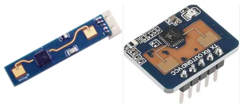
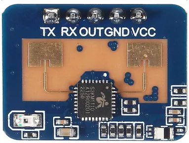
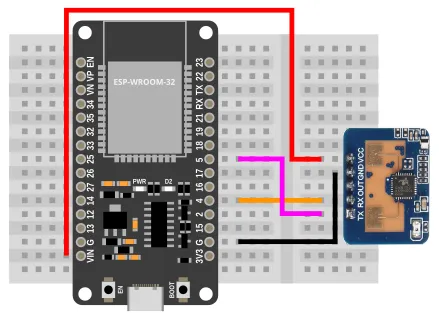
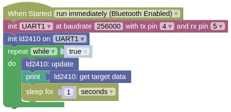

Human Presence Radar (LD2410)

The LD2410 uses a 24GHz radar to detect the presence of people. Unlike Infrared or Ultrasonic sensors, it can detect both moving and stationary people, and provide an approximate range.
This can be useful to detect when someone is in a room or near to your device.
Pins

| Pin | Description |
|---|---|
| VCC | Power for the sensor (5V). If your device is on USB power, you can use the 5V from VIN, else you'll need to provide a separated 5V power supply for it. |
| GND | Ground pin. This should be connected to the GND pin on the ESP32. |
| TX | Data transmit. This should be connected to the UART RX pin on the ESP32 (default is Pin 5). |
| RX | Data receive. This should be connected to the UART TX pin on the ESP32 (default is Pin 4). |
| OUT | Optionally provides a present / not-present signal. |
Wiring

Code
This code will return the full detection data as a list.
Blocks

Python
import machine
import ld2410
import time
uart1 = machine.UART(1, baudrate=256000, tx=4, rx=5)
ld2410_device = ld2410.LD2410(uart1)
while True:
ld2410_device.update()
print(ld2410_device.get_target_data())
time.sleep(1)
Results
The result will be printed to the monitor as a list every one second. The list contains; "state, moving target dist (cm), moving target energy, stationary target dist (cm), stationary target energy, detection distance". The meaning of these are...
-
state 0: None, 1: Moving target, 2: Stationary target, 3: Both targets.
-
moving target dist Distance (cm) at which a moving target was detected.
-
moving target energy The detection confidence level, between 0 (low confidence) to 100 (very confident).
-
stationary target dist Distance (cm) at which a stationary target was detected.
-
stationary target energy The detection confidence level, between 0 (low confidence) to 100 (very confident).
-
detection distance I don't know what this means.
Try moving around and staying stationary at different ranges and observe the changes in the printed values.
class LD2401 - control LD2410 Human Presence Radar
Constructors
ld2410.LD2410(uart)
Creates a LD2410 object.
The arguments are:
uartA UART object.
Returns a LD2410 object.
Gates
The returned data and settings often refers to gates, which represent a distance range. Each gate has a energy level threshold for detecting movement and stationary presence.
| Gate | Distance | Move threshold | Stationary threshold |
|---|---|---|---|
| 0 | 0cm | 50 | 0 |
| 1 | 0 to 75cm | 50 | 0 |
| 2 | 75 to 150cm | 40 | 40 |
| 3 | 150 to 225cm | 30 | 40 |
| 4 | 225 to 300cm | 20 | 30 |
| 5 | 300 to 375cm | 15 | 30 |
| 6 | 375 to 450cm | 15 | 20 |
| 7 | 450 to 525cm | 15 | 20 |
| 8 | 525 to 600cm | 15 | 20 |
Methods
LD2410.update()
Reads data from the sensor. You must run this frequently.
Returns None.
LD2410.get_target_data()
Get the target data.
Returns a list containing "state, moving target dist (cm), moving target energy, stationary target dist (cm), stationary target energy, detection distance". The meaning of these are...
-
state 0: None, 1: Moving target, 2: Stationary target, 3: Both targets.
-
moving target dist Distance (cm) at which a moving target was detected.
-
moving target energy The detection confidence level, between 0 (low confidence) to 100 (very confident).
-
stationary target dist Distance (cm) at which a stationary target was detected.
-
stationary target energy The detection confidence level, between 0 (low confidence) to 100 (very confident).
-
detection distance Unclear what this means..
LD2410.get_engineering_data()
Get the engineering data. This contains more information than the target data, but engineering mode must be enabled.
Returns a list containing "max moving gate, max stationary gate, moving gate energy, stationary gate energy". The meaning of these are...
-
max moving gate The maximum gate at which the moving energy is detected.
-
max stationary gate The maximum gate at which the stationary energy is detected.
-
moving gate energy A list containing the energy level for each gate.
-
stationary gate energy A list containing the energy level for each gate.
LD2410.enable_config()
Enables changing of configurations.
You must run enable_config() before changing any configuration values, and run disable_config() after making the change.
Returns None.
LD2410.disble_config()
Disbles changing of configurations.
You must run enable_config() before changing any configuration values, and run disable_config() after making the change.
Returns None.
LD2410.set_max_values(moving_gate, stationary_gate, inactivity_time)
Sets configurations.
The arguments are:
-
moving_gateAn integer representing the maximum gate which will detect a moving person. -
stationary_gateAn integer representing the maximum gate which will detect a stationary person. -
inactivity_timeAn integer representing the time in seconds during which the output will stay on after is lost.
Returns None.
LD2410.enable_engineering_mode()
Enables engineering mode.
You must be in engineering mode to obtain data from get_engineering_data().
Note that the device always starts with engineering mode disabled.
Returns None.
LD2410.disable_engineering_mode()
Disables engineering mode.
Returns None.
LD2410.set_gate_sensitivity(gate, moving, stationary)
Sets the sensitivity threshold for the specified gate. Energy level for the gate must be above its sensitivity threshold for movement to be detected.
As the maximum energy level is 100, if the sensitivity threshold is set to 100, that gate will be effectively disabled.
Note that this setting will persist across a power cycle.
The arguments are:
-
gateAn integer representing gate that you are setting the sensitivity threshold for. -
movingAn integer representing the moving sensitivity threshold. -
stationaryAn integer representing the stationary sensitivity threshold.
Returns None.
LD2410.get_firmware_version()
Gets the version of the LD2410 firmware.
Returns a tuple containing 3 integers (firmware type, major version, minor version).
LD2410.set_baudrate(baudrate)
Sets the baudrate.
The arguments are:
-
baudrateThe baudrate setting, which can be one of the following:-
1Set the baudrate to 9600. -
2Set the baudrate to 19200. -
3Set the baudrate to 38400. -
4Set the baudrate to 57600. -
5Set the baudrate to 115200. -
6Set the baudrate to 230400. -
7Set the baudrate to 256000. This is the factory default. -
8Set the baudrate to 460800.
-
LD2410.factory_reset()
Reset all settings to the factory default.
Returns None.
LD2410.restart()
Restart the device.
Returns None.